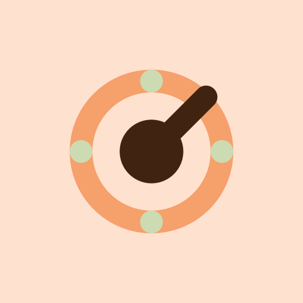

Struttura da 1a (tab bar + tablet a colonne), con la ricerca dominante di 1b portata dentro le liste. Tutte le varianti di stato dei due journey; il tablet chiude ogni gruppo. Dark solo dove l'app lo mostra davvero a schermo pieno (unlock e lock).
PropostaLe didascalie distinguono ciò che esiste già nel codice da ciò che aggiungo: dove leggi Proposta il controllo oggi non c'è (create_database_dialog.dart, recent_databases_section.dart, resolve_database_duplicate_usecase.dart alla mano).

KeyVault opens standard KeePass .kdbx databases. Nothing leaves the file unless you connect Google Drive.
Una promessa in una frase e tre strade. Sparisce il muro di testo dell'attuale schermata di selezione; il gradiente diagonale lascia il posto al ground crema piatto.
Oggi questa lista è la sezione Managed databases (recent_databases_section.dart): nome file, percorso completo, badge “Most recent” e un menu a tre voci — Open, Export, Remove — su ogni riga. Qui il percorso lascia il posto alla sorgente e allo stato leggibili, il menu resta (Export e Remove nel more), e la ricerca compare oltre i 5 database come già fa il codice. Proposta: la riga di file mancante.
You can move the file later — KeyVault only remembers where it is.
Next: master password, then key file.
Oggi è un dialog unico — New Database Credentials: nome file (default new_database.kdbx), password, conferma, switch biometria, switch “Generate key file automatically”, selezione key file. Diventa tre passi brevi con gli stessi campi. La destinazione non è una scelta: su mobile e desktop il file nasce nello storage interno dell'app, esattamente come scrive il dialog attuale — qui lo dico in una riga invece che in un paragrafo.
This is the only thing that decrypts the file. If you lose it, no one — including us — can recover it.
Forza mostrata come quattro tacche, non come percentuale. La frase sull'irrecuperabilità sta qui, dove conta, e non in un dialog di conferma dopo.
Both are optional and can be changed later in database settings.
Key file generato e biometria sono i due switch che il dialog attuale ha già, riuniti sotto una domanda sola: quanto stretto lo vuoi. L'auto-lock è approvato: il timeout esiste già nel codice (getInactivityLockTimeoutForPath) e da qui si imposta alla creazione, invece di restare un valore invisibile.
KeyVault only sees files you pick. It never lists your whole Drive.
Skeleton con la stessa forma delle righe finali, così la lista non salta. Sotto, la riga di privacy che oggi manca del tutto in questo passaggio.
The account camillo@bucciarelli.dev has no matching database. Check the name, or create a new database and let KeyVault upload it.
Empty state che dice quale account sta guardando e offre le due sole uscite sensate. Nessun testo "no results" generico.
passwords-export.csv isn’t a .kdbx file. CSV exports from other managers are imported from inside an unlocked vault, not here.
La validazione fallita (validate_database_usecase) diventa una sheet che nomina il file e dice dove sta l'import CSV — che nel codice è un VaultEvent, quindi disponibile solo a vault aperto: da qui non si può lanciare.
The file you picked matches Personal.kdbx already on this device — same source, or the same content hash.
Il dialog reale Duplicate database detected offre tre uscite — Keep both, Replace existing, Use existing — riconoscendo il duplicato per sourceRef o per hash (ResolveDatabaseDuplicateUseCase). Qui restano tutte e tre, ordinate dalla più sicura, con la conseguenza scritta sotto ciascuna.
128 items · on this device
Una schermata, un campo. Lo "Step 1 of 2 / Step 2 of 2" e i quattro paragrafi di oggi diventano: nome del database, campo, pulsante, due alternative in link.
Personal.kdbx requires Face ID before the master password can be used.
Dark ground neutral-900, accento accent-400. Il gate biometrico oggi è un bottone dentro la card; qui è la schermata, perché è l'unica cosa da fare.
128 items · on this device
L'errore sta sotto il campo, non in uno snackbar in fondo allo schermo, e nomina la seconda causa possibile: il key file mancante — che è esattamente l'ambiguità del codice attuale (password o key file o entrambi).
Google Drive · synced 1 h ago
Manage key files →
Quando c'è un key file il pulsante lo dice, e il campo password si smarca come opzionale — la logica canUnlockManually resa visibile invece che spiegata in un riquadro informativo.
Stored inside KeyVault’s private storage. They are never uploaded with the database.
Il manager interno per iOS/Android: dice quale database usa quale file, e protegge dalla cancellazione quello in uso (protectedPaths nel codice).
KDBX 4 with 64 MB Argon2 — this takes a moment on purpose.
L'attesa dell'Argon2 (oggi uno spinner nudo) diventa un'attesa spiegata: si sa cosa sta facendo e perché è lenta.
This database came from Google Drive. Requiring Face ID before unlock protects it if someone gets your phone.
Lo stesso prompt di promptBiometricSetup, ma con il motivo ("viene da Drive") scritto prima della domanda.
Standard KeePass files. Your vault stays a file you can copy, back up and read with anything.
Due colonne: a sinistra l'identità e le tre azioni, a destra i database come card con la sorgente presa da DatabaseSourceType (local · drive · created) e le azioni del menu attuale (Open, Export, Remove). La riga in basso che porta al setup dell'autofill desktop è una proposta: la BrowserSetupScreen esiste ma non è raggiungibile da qui.
128 items · ~/Documents/Personal.kdbx
Su desktop la card resta centrata (come oggi, max 600px) ma perde i tre paragrafi e lo “Step 1 of 2 / Step 2 of 2”: password, key file, cambio database — le sole tre cose che database_unlock_screen.dart permette qui.
Prossimo: "ok, vai con 04 dettaglio voce" · "sul create database accorpa gli step 2 e 3" · "mostrami tutto il journey 01 anche in dark"